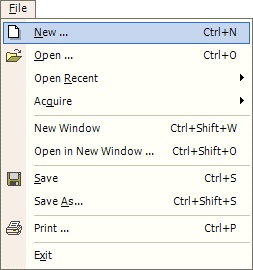
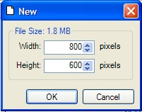

New Operation
|  The New Operation (File-->New) creates a blank image. This operation prompts for confirmation before clearing the image. |
|  A new image starts with default dimensions of 800 (horizontal) by 600 (vertical) pixels. The file size of the image is noted above. |